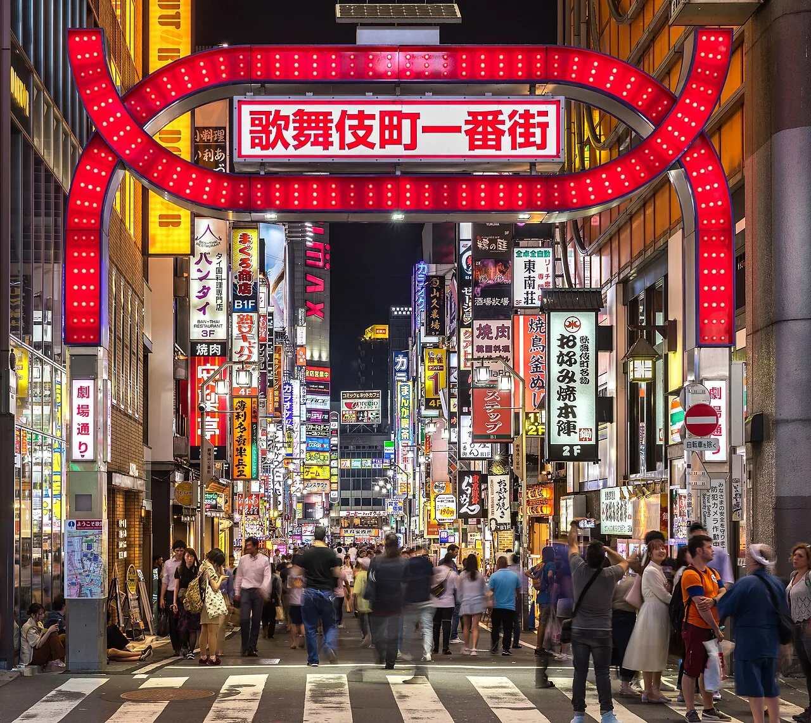
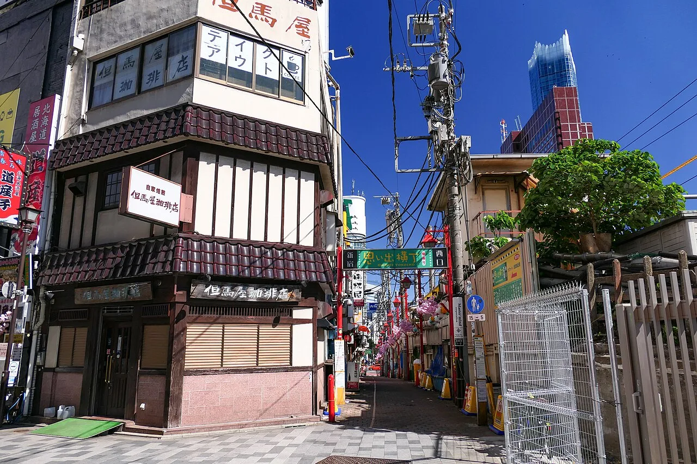
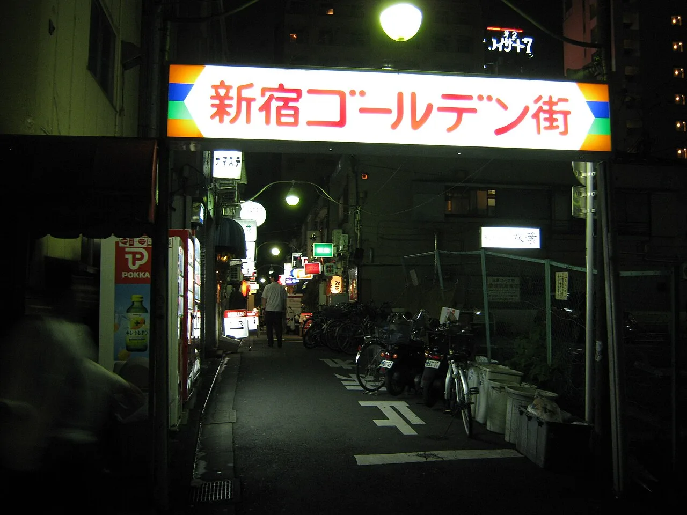

28.10, среда
прилёт
Нарита, Канда, первый неон
Narita Express довозит до станции Tokyo примерно за час, оттуда одна остановка до Kanda, в отеле будем к двум. Номер дают с 15:00, чемоданы оставляем на ресепшене. Вечером двенадцать минут по Chuo Rapid до Синдзюку: неон Кабукитё и ужин в Omoide Yokocho, переулке на полсотни идзакай у путей
Если после перелёта останутся силы, заглянем в Golden Gai по соседству: квартал двухсот крошечных баров на шесть мест каждый. Внутрь идти не обязательно, он и снаружи работает как музей под открытым небом. Если сил нет совсем, в двух минутах от отеля идзакаи под путями у станции Kanda



1 / 3